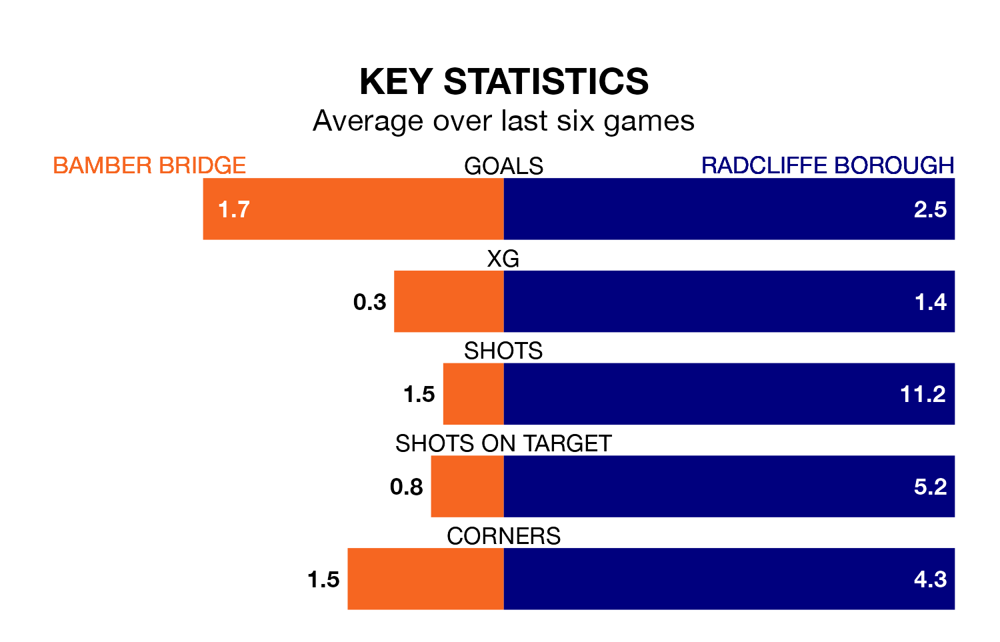

Radcliffe Borough are strong favourites to take all three points despite Bamber Bridge's home advantage in Saturday's match at the Sir Tom Finney Stadium.
*Betting Company* are offering odds of 1.4 on Radcliffe sealing the win, with the visitors sitting first in Northern Premier League table.
Bamber Bridge, who are 16th in the league and 28 points behind the Boro, are priced at 5.5 to win. A draw is set at 4.5.
With 70 goals in 25 games so far this season, Radcliffe are the league's highest scorers with 2.8 goals per game. And they are conceding fewer than average, letting in 35 goals at a rate of 1.4 per game.
Bamber Bridge, meanwhile, are below average scorers, with 1.6 goals per game, compared to a league average of 1.7. They have conceded 1.8 goals per game.
In the last 10 years, Bamber Bridge and Radcliffe have played each other on nine occasions. They won four each, and they drew once.
On average, Bamber Bridge scored 1.8 goals and the Boro 1.7 in those matches.
Their last meeting was on November 25, when Radcliffe won 3-2 at home.
The home team are in mixed form in Northern Premier League, with three wins and a draw from their last six games.
With five wins and one loss over that period, Borough's form is better – they have taken 15 points from 18, compared to Bamber Bridge's 10.
Bamber Bridge's last match was on January 20, a 7-1 loss against Marine.
Radcliffe beat Macclesfield 3-2 last time out, also on January 20.
Updated: 08:51 (UTC), 25/01/24